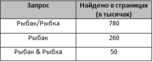

В языке запросов поискового сервера для обозначения логической операции «ИЛИ» используется символ «|», а для обозначения логической операции «И» — символ «&».В таблице приведены запросы и количество найденных по ним страниц некоторого сегмента сети Интернет.

Какое количество страниц (в тысячах) будет найдено по запросу Рыбка?
Считается, что все запросы выполнялись практически одновременно, так что набор страниц, содержащих все искомые слова, не изменялся за время выполнения запросов.
Для решения восьмого задания необходимо знать одну формулу, без неё решить номер довольно проблематично. Есть 2 метода решения - с помощью кругов Эйлера и с помощью формулы. Первый метод используется реже, поэтому решение задачи я представлю вторым методом:
А - Рыбка. Б - Рыбак.
- 1) (А+Б)-А&Б=А/Б
- 2) (А+260)-50=780
- 3) Решив уравнение, понятно, что А=570.